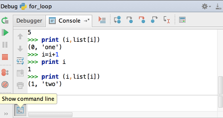

While debugging, you may need an interactive console at hand... This is mostly easy. During debugging, switch to the Debugger Console, and then press the lowest button in its toolbar.
The console becomes interactive and it shows a prompt, where you can enter commands and view output.
